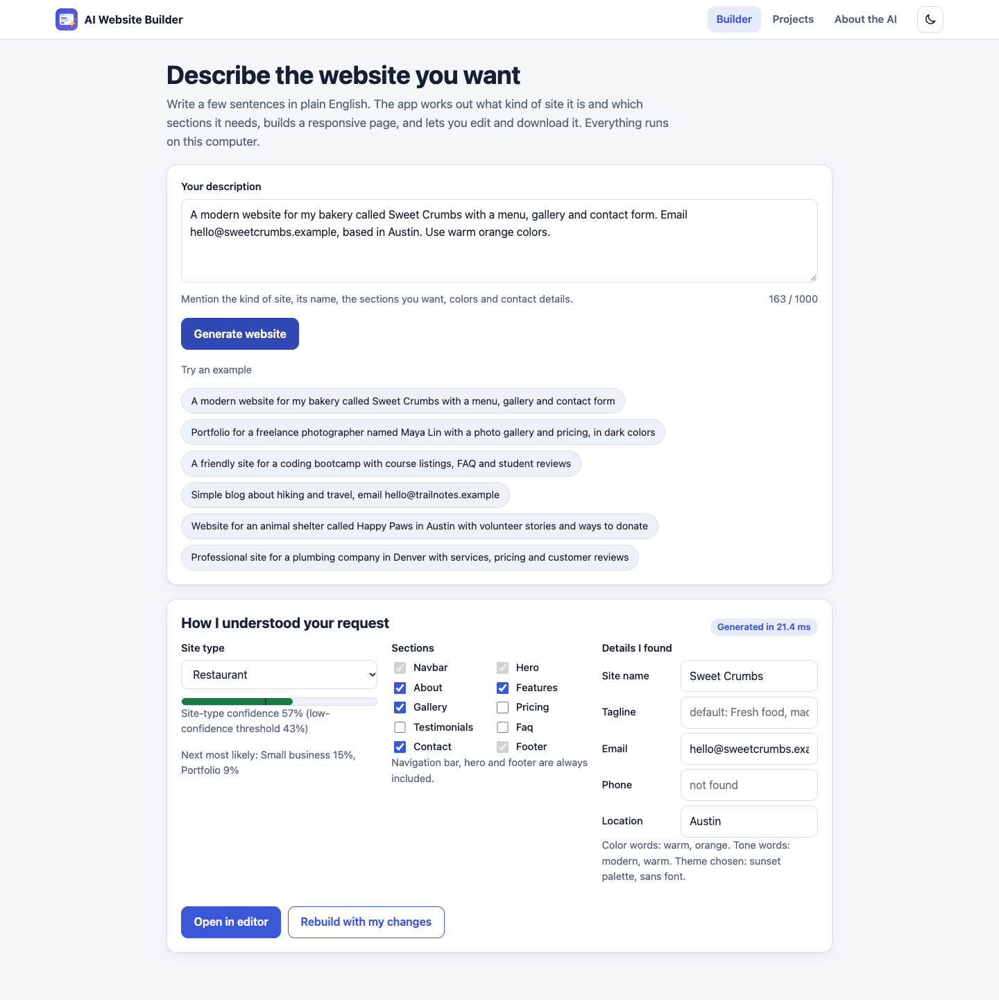
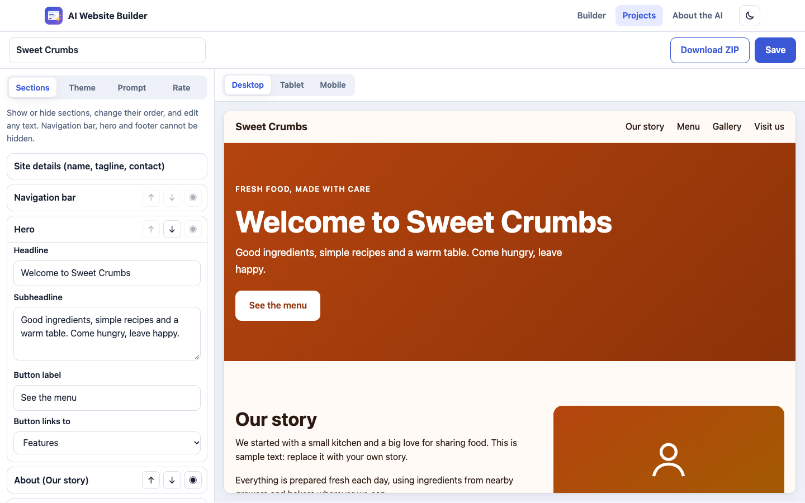
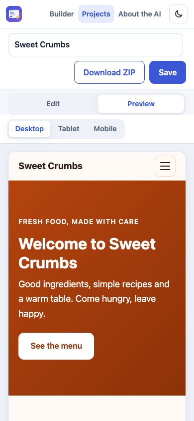
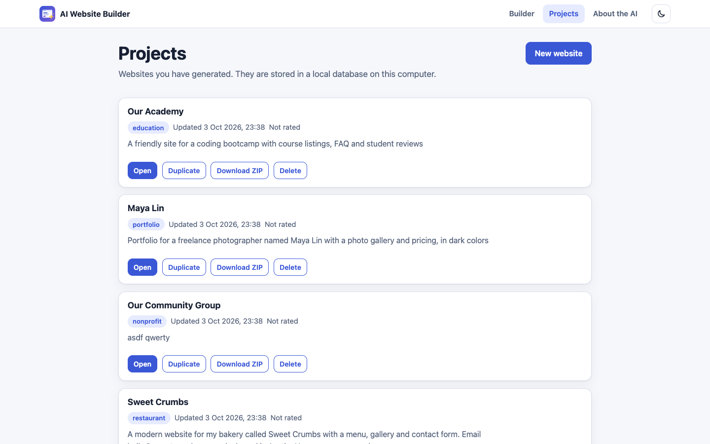
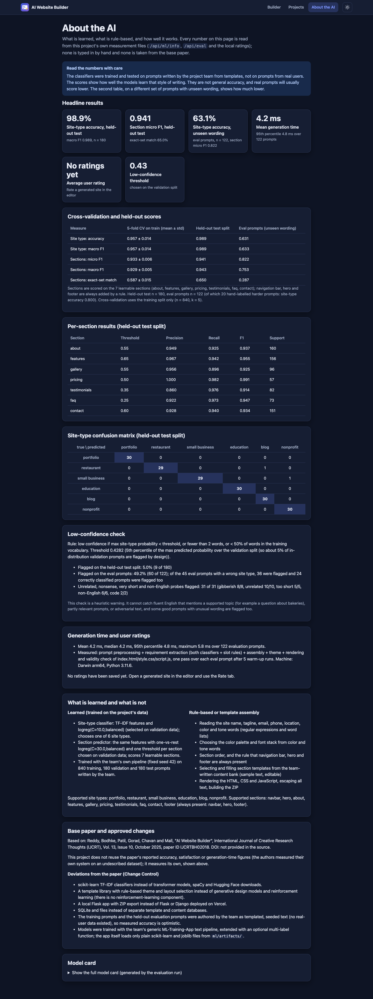
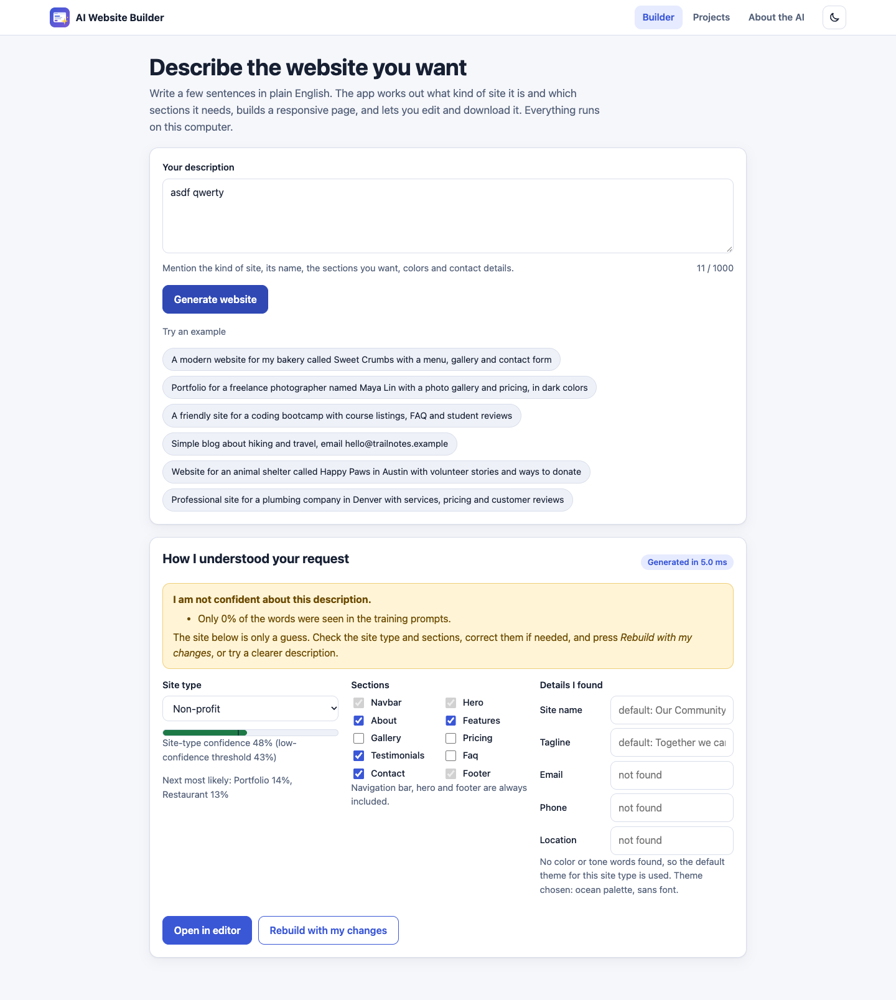

AI Website Builder
A local Flask app that turns a plain-English description into a responsive, editable, exportable website using two trained scikit-learn classifiers, rules and a template library. · ~5 min read · Last verified 2026-10-03
How it works
ml/data (templated, team-authored) -> ML-Training-App text_pipeline (TF-IDF) -> ml/artifacts/*.joblib, metrics.json, model_card.md
Browser UI -> Flask routes -> Prompt Preprocessor
-> Requirement Extractor: site-type classifier + section predictor (LEARNED)
+ Slot Extractor, low-confidence check (RULES)
-> Component Assembler (section templates + content bank) -> Theme Engine
-> Renderer (Jinja2 autoescape, fixed script.js) -> live preview iframe / ZIP export
-> SQLite: projects, feedback
Learned: site type and section prediction only. Rule-based: slots, theme, ordering, the mandatory navbar/hero/footer, content selection, the low-confidence check.
Tech stack
| Layer | Used | Deviation from spec |
|---|---|---|
| Web | Flask + Jinja2, vanilla JS, no CDN or web fonts | None |
| ML | scikit-learn TF-IDF + linear models, joblib; trained through ML-Training-App | The shared tool got a generic optional multi-label function; train.py imports it (path via ML_TRAINING_APP) |
| Storage / export | SQLite, zipfile | None |
| Python | 3.11+ (pinned numpy/pandas/scikit-learn need it) | Spec says 3.10+; scripts enforce 3.11 |
| Training data | 1200 templated prompts + 122 held-out eval prompts, authored by the build | Spec expected team-supplied data; approved Change Control, labels not reviewed by a human |
Standard checklist
| Item | Why | |
|---|---|---|
| Scope proportionate | Met | No auth, cloud or extra services. Two extra routes (/api/meta, /api/model/add-section). |
| Full doc set | Partly | README, Project Information, traceability and screenshots exist. Abstract, viva, PPT, Confluence and Demo are empty. The base paper PDF is missing and no DOI is given. |
| Base paper cited | Met | Authors, venue, issue, year and ID cited. DOI marked "not provided in the source". |
| Command-line buildable | Met (macOS) | start.sh and train.sh run. The .bat files and Linux were not run. |
| Defaults agree everywhere | Met | Threshold 0.4282 and metrics match across code, README, Project Information and artifacts (checked by me and by tests). |
| Model quality measured | Met | CV, held-out test and unseen-wording eval reported, including the weak cases. Re-scored independently: eval accuracy 63.1%. |
| Trained with ML-Training-App | Met | Generic tool kept generic. Its new function has no project-specific names. |
| Out-of-distribution handled | Met | Low-confidence warning flags 31 of 31 probes. Known miss: fluent on-topic nonsense ("best bakery in France"). |
| Local-first | Met | No external requests (grepped, and observed in the browser). |
| 3+ screens, modern UI | Met | 4 pages, light and dark, responsive. |
| Spec fidelity | Met | See below. |
Objectives and how each was verified
| Objective | Verification |
|---|---|
| Extract requirements from a prompt | Real browser, 3 prompts of different types; extractor and slot unit tests; independent re-score of the eval set. |
| Assemble a responsive site and preview at 3 widths | Renderer tests (valid HTML, viewport meta, @media, no external URLs); device toggles checked live. |
| Customize, save, export ZIP | Live edit, hide, reorder, theme, regenerate, save, reopen, duplicate, delete. ZIP holds exactly 3 files and matches the preview (served on localhost; the built-in browser does not render file:// with CSS). |
| Measure and display performance | About page values compared with metrics.json and eval_results.json; no hardcoded numbers. |
| Safe output | XSS payloads in text and site name are escaped in preview and export; script.js is byte-equal to the template. |
Measured results (team-authored data, so optimistic)
| Measure | 5-fold CV | Held-out test (180) | Unseen wording (122) |
|---|---|---|---|
| Site-type accuracy | 0.957 ± 0.014 | 98.9% | 63.1% |
| Sections micro F1 (7 learnable) | 0.933 ± 0.006 | 0.941 | 0.822 |
Generation takes about 4 ms on average (p95 4.8 ms). The unseen-wording column is the honest number for real prompts; 49% of those prompts trigger the low-confidence warning.
Screenshots (real browser captures)






Defects found and fixed this cycle
- Tiny horizontal overflow at 375px (theme button): fixed.
- Stale result panel after a validation error: fixed.
- Move up/down did nothing next to a hidden section: fixed, with a test.
- "student reviews" did not select testimonials: training phrasings added, retrained, every number re-recorded in the docs.
Known limitations
- Training and eval prompts are templated and authored by the build, not by people; labels were never human-reviewed.
- Fluent on-topic nonsense passes as a confident site; unusual but valid wording is often flagged.
- Output is limited to the 6 site types and 10 sections; copy is placeholder-quality; the contact form is a static mailto.
- The preview iframe is sandboxed, so its mailto form cannot submit there.
- Windows (
.bat) and Linux were not run. Python 3.11+ is required. - The tester could not save PNG evidence; it saved DOM checks and exports instead. Screenshots in
docs/screenshots/come from the developer's Playwright run. - Nothing has been committed or pushed, there is no remote, and no CI exists for this stack.
Verdict
The build meets every stated objective and functional requirement, verified by the tests and by live checks in a real browser, with the deviations above documented. The main caveat is the data: the accuracy figures are measured honestly but on prompts the build authored. Replacing them with human-written prompts is the most valuable next step before a demo.